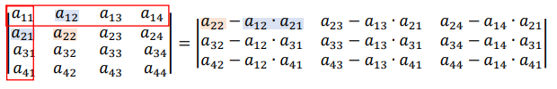

| HOME |
Serve para calcular um valor futuro de vários depósitos iguais. Um exemplo seria uma conta poupança, onde é depositado um valor todo mês, nessa situação, "P" seria o valor depositado, "N" seriam os meses, M seria o muntante e "i" seria o juro. (Analizado a partir de uma das questões de exemplo).
Para fazer calculos de capitalização normalmente é utilizado uma calculadora, pois se perde precisão após arredondar várias vezes.
Amortização é o contrário, é fazer pagamentos para acabar com uma dívida existente. Existem duas fórmulas, dependendo do valor que é preciso encontrar (Valor das Prestações ou o Capital Inicial).
Nesse se mostra muito mais importante o uso da calculadora para resultados precisos.
Aperte aqui para ir entrar no meu trabalho sobre matrizes!
É uma cadeia de números parecida com os Arrays. Dentro das matrizes podem ser armazenados vários tipos de valores, EX: inteiros, decimais, frações, raízes, etc.
Exemplo de Matrizes:
| 1 | 3 |
| -4 | 0 |
| 7 | 1 |
| 1 / 2 | √3 |
| -2,5 | 0 |
Determinante é o número que uma matriz quadrata tem. pode ser representada por det(M), |M| ou det(Ml x c)
Não entendi o uso dos determinantes em situações do dia a dia.
A mais fácil de todas, o 11 da matriz já é o próprio determinante.
M =
M11
Para encontrar o determinante em matrizes 2x2, é necessário fazer a multiplicação dos termos da diagonal principal e subtrair com o produto dos termos da diagonal secundária.
M =
| M11 | M12 |
| M21 | M22 |
Para encontrar o determinante em matrizes 3x3, é necessário repetir as primeiras 2 colunas, e fazer 3 diagonais principais e 3 diagonais secundárias. Após isso, basta repetir o processo do determinante 2x2.
M =
| M11 | M12 | M13 |
| M21 | M22 | M23 |
| M31 | M32 | M33 |
Para a resolução de Matrizes 4x4, utilizamos Chió.
Chió só pode ser aplicada se o primeiro termo da matriz tem valor 1, para alcançar isso, podem ser aplicadas as propriedades.
Após isso, você terá uma matriz 3x3, onde poderá ser aplicado Chió novamente, ou resolver por meio das diagonais.
Consegui entender muito bem os conteúdos apresentados durante o primeiro trimesmtre. No inicio tive dificuldades especialmente com Amortização, mas a partir do momento em que consegui ligar os assuntos com temas presentes no meu dia a dia senti uma diferença enorme no entendimento. Sobre as matrizes, não houve dificuldade, já tinha visto um pouco do conteúdo em outros lugares, e na programação costumo usar Arrays (algo parecido com matrizes) para quase tudo.
O maior problema encontrado, foi em anuidades, onde tive dificuldade em saber montar a conta interpretando a questão e em determinantes 4x4, onde é fácil errar um número e acabar com a conta inteira.
Nota: